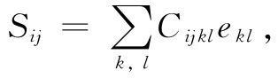

我们已描述了应变，现在要把这些应变与内力——材料中的应力——联系起来。对于材料中每一小部分，假定胡克定律都成立，因而将应力写成正比于应变。在第31章中，我们曾把应力张量Sij 定义为在整个垂直于j轴的单位面积上的力的第i个分量。胡克定律讲，Sij 的每一分量与每一个 应变分量都为线性关系。由于S或e每个有9个分量，因此会有9×9=81个可能的系数被用来描述材料的弹性。如果材料本身是均匀的，则它们都是常数。现在把这些系数写成Cijkl ，并由下式定义：

其中i，j，k，l都可取1，2或3的值。既然这些系数Cijkl 把一个张量与另一个张量联系起来，所以它们本身也就形成一个张量——一个四阶 张量，可以称它为弹性张量 。
假定所有的C均为已知，而你将一个复杂的力作用于某一特殊形状的物体之上。将会有各式各样的形变，而该物体就将形成某种被扭转过的形状。位移将会怎样呢？你可以看出那是一个复杂的问题。假如你知道了应变，你便能够由式（39.12）求出应力——或者相反。但在任一点上，你所获得的应力和应变都将取决于材料的所有其余部分发生的情况。
解决这一问题的最易途径就是考虑能量。当有力F正比于位移x时，比如说F=kx，则对于任意位移x所需之功为kx2 /2。同理，可以证明进入单位体积 形变材料内的功w为
在使物体形变过程中所作的总功W为w对整个体积的积分：
于是，这就是储藏于材料内应力中的势能。现在当物体处于平衡态时，其内能必然处在极小 。因此，求物体中应变的问题，就可以通过求出整个物体的一组位移u——将使得W为极小——而得到解决。我们曾在第19章中提供过处理像这一类极小值问题时使用到的变分法的某些普遍概念。这里不能对这一问题进行更详尽的深入讨论。
现在我们主要感兴趣的是，关于弹性张量的一般性质我们能够说些什么。首先，很明显，实际上在Cijkl 中并没有 81个不同 项。由于Sij 和eij 两者都是对称张量，所以每个张量就只有六个不同项，因而在Cijkl 中至多也只能有36个不同项。然而，存在的项往往比这还少得多。
让我们考察立方晶体的特殊情况。在其中，能量密度w像下式这样开始写起：
共有81项！但是立方晶体具有某些对称性。特别是，如果晶体被转过90°，则它具有相同的物理性质。对于在y方向的拉伸与对于在x方向的拉伸来说具有相同的刚度。因此，如果我们改变式（39.15）中关于x和y两坐标方向的定义，则能量就不会改变。对于立方晶体来说，必然有
Cxxxx =Cyyyy =Czzzz . （39.16）
其次，我们还能够证明，像Cxxxy 那些项一定会等于零。立方晶体具有这么一种性质，即在与轴正交的任何平面的反射 之下它是对称的。若我们用-y代替y，不会有什么差别。但当由y变至-y时exy 会变成-exy ——以前朝向+y的位移现在朝向-y了。如果能量不会改变，则当我们做反射时，Cxxxy 就必然变成-Cxxxy 。但反射后的晶体与以前的相同，因此Cxxxy 就必须与-Cxxxy 相等 。这只有当两者均等于零时才能实现。
你会说：“但同样的论证也将使Cyyyy =0啊！”不对，因为这里共有四个 y。对于每个y，符号都要改变一次，而四个负号就会造成一个正号。因此，若有两 个或四 个y，则该项的确不必为零。只有当出现一 或三个y时，它才是零。所以，对于立方晶体来说，C的任何不等于零的项将只有偶数 个相同的脚标（上面我们对于y所做的论证，显然对于x和z也都有效）。于是，也许会有像Cxxyy ，Cxyxy ，Cxyyx ，等等的项。然而已经证明，若把所有的x都改成y，以及相反 （或把所有的z和所有的x对换，等等），则我们必定获得——对于立方晶体来说——相同的数值。这意味着只有三种不同 的非零可能性：
于是，就立方晶体来说，能量密度看来会像这样：
就各向同性——也就是非晶的——材料而言，对称性还会更高。那些C项应该对于坐标系的任何 选取都相同。于是结果是，在那些C项中还存在另一个关系式，即
Cxxxx =Cxxyy +Cxyxy . （39.19）
通过下面的一般论证可以看出的确是这样。应力张量Sij 与eij 必须与坐标方向完全无关的方式相联系，即必须只由标 量来联系。你会说：“那很容易。”“从eij 得到Sij 的唯一途径，就是由一个标量常数相乘，它正好就是胡克定律，所以它必定是Sij =（常数）eij ”，但这并不完全对，因为也可能存在由单位张量 δij 乘上与eij 成线性关系的某个标量。你能够用e线性地构成的唯一不变量是∑eii （它如同标量x2 +y2 +z2 那样变换）。因此，把Sij 与eij 联系起来的方程的最普遍形式——对于各向同性材料来说——为
（第一个常数往往被写成2 乘以μ，这样该系数μ才会等于我们在上一章中曾定义过的剪切模量）。μ和λ这两常数称为拉梅弹性常数。将式（39.20）和（39.12）两相比较，你就会看出
因此，我们已经证明了式（39.19）的确是正确的。你也会看到，各向同性材料的弹性可由两个常数完全给出，正如我们曾在上一章中说过的那样。
这些C项可用以前曾经用过的任意两个弹性常数——例如杨氏模量Y和泊松比σ——来表示。我们愿意把下列各式留给你们去证明：